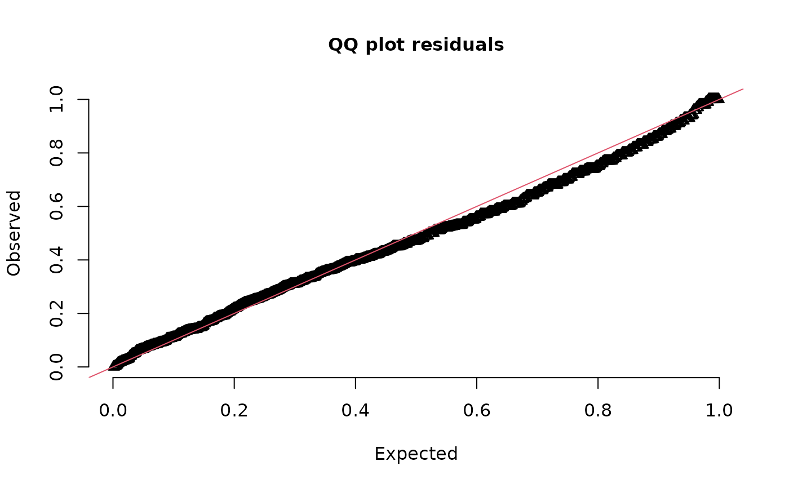
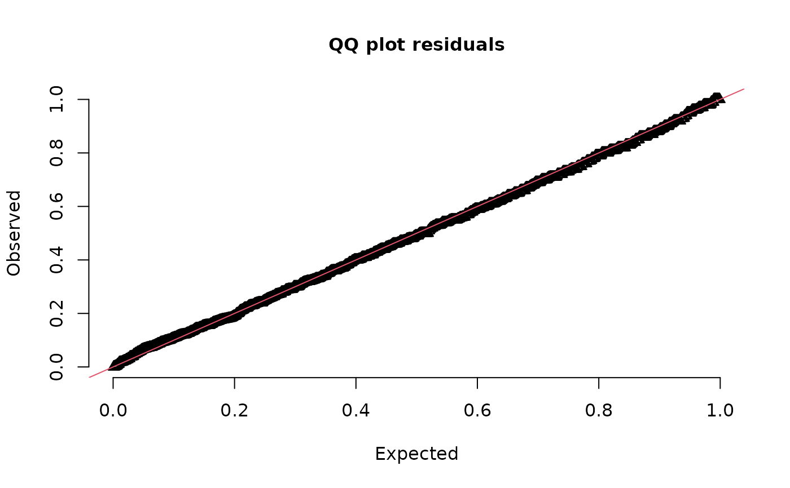
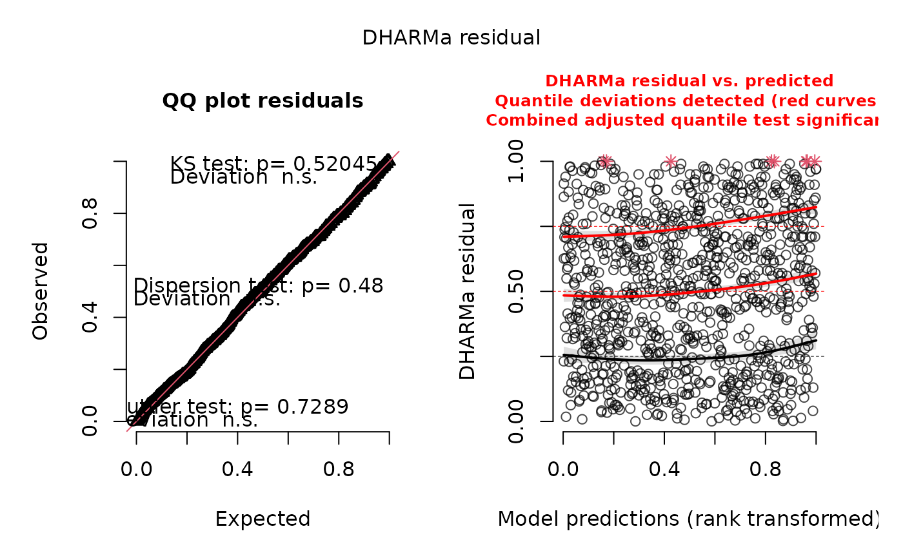

Plot (and possibly return) DHARMa residuals. This is a wrapper function
around DHARMa::createDHARMa() to facilitate its use with sdmTMB() models.
Note: It is recommended to set type = "mle-mvn" in
simulate.sdmTMB() for the resulting residuals to have the
expected distribution. This is not the default.
Usage
dharma_residuals(
simulated_response,
object,
plot = TRUE,
return_DHARMa = FALSE,
test_uniformity = FALSE,
test_outliers = FALSE,
test_dispersion = FALSE,
...
)Arguments
- simulated_response
Output from
simulate.sdmTMB(). It is recommended to settype = "mle-mvn"in the call tosimulate.sdmTMB()for the residuals to have the expected distribution.- object
Output from
sdmTMB().- plot
Logical. Calls
DHARMa::plotQQunif().- return_DHARMa
Logical. Return object from
DHARMa::createDHARMa()?- test_uniformity
Passed to
testUniformityinDHARMa::plotQQunif().- test_outliers
Passed to
testOutliersinDHARMa::plotQQunif().- test_dispersion
Passed to
testDispersioninDHARMa::plotQQunif().- ...
Other arguments to pass to
DHARMa::createDHARMa().
Value
A data frame of observed and expected values is invisibly returned so you can assign the output to an object and plot the residuals yourself. See the examples.
If return_DHARMa = TRUE, the object from DHARMa::createDHARMa()
is returned and any subsequent DHARMa functions can be applied.
Details
See the residuals vignette.
Advantages to these residuals over the ones from the residuals.sdmTMB()
method are (1) they work with delta/hurdle models for the combined
predictions, not the just the two parts separately, (2) they should work for
all families, not the just the families where we have worked out the
analytical quantile function, and (3) they can be used with the various
diagnostic tools and plots from the DHARMa package.
Disadvantages are (1) they are slower to calculate since one must first simulate from the model, (2) the stability of the distribution of the residuals depends on having a sufficient number of simulation draws, (3) uniformly distributed residuals put less emphasis on the tails visually than normally distributed residuals (which may or may not be desired).
Note that DHARMa returns residuals that are uniform(0, 1) if the data
are consistent with the model whereas randomized quantile residuals from
residuals.sdmTMB() are expected to be normal(0, 1).
Examples
# Try Tweedie family:
fit <- sdmTMB(density ~ as.factor(year) + s(depth, k = 3),
data = pcod_2011, mesh = pcod_mesh_2011,
family = tweedie(link = "log"), spatial = "on")
# The `simulated_response` argument is first so the output from
# simulate() can be piped to `dharma_residuals()`.
# We will work with 100 simulations for fast examples, but you'll
# likely want to work with more than this (enough that the results
# are stable from run to run).
# not great:
set.seed(123)
simulate(fit, nsim = 100, type = "mle-mvn") |>
dharma_residuals(fit)

# \donttest{
# delta-lognormal looks better:
set.seed(123)
fit_dl <- update(fit, family = delta_lognormal())
simulate(fit_dl, nsim = 100, type = "mle-mvn") |>
dharma_residuals(fit)

# or skip the pipe:
set.seed(123)
s <- simulate(fit_dl, nsim = 100, type = "mle-mvn")
# and manually plot it:
r <- dharma_residuals(s, fit_dl, plot = FALSE)
head(r)
#> observed expected
#> 1 0.0002512885 0.001030928
#> 2 0.0003998549 0.002061856
#> 3 0.0017916820 0.003092784
#> 4 0.0030243763 0.004123711
#> 5 0.0032777465 0.005154639
#> 6 0.0060709249 0.006185567
plot(r$expected, r$observed)
abline(0, 1)
# return the DHARMa object and work with the DHARMa methods
ret <- simulate(fit_dl, nsim = 100, type = "mle-mvn") |>
dharma_residuals(fit, return_DHARMa = TRUE)
plot(ret)

# }